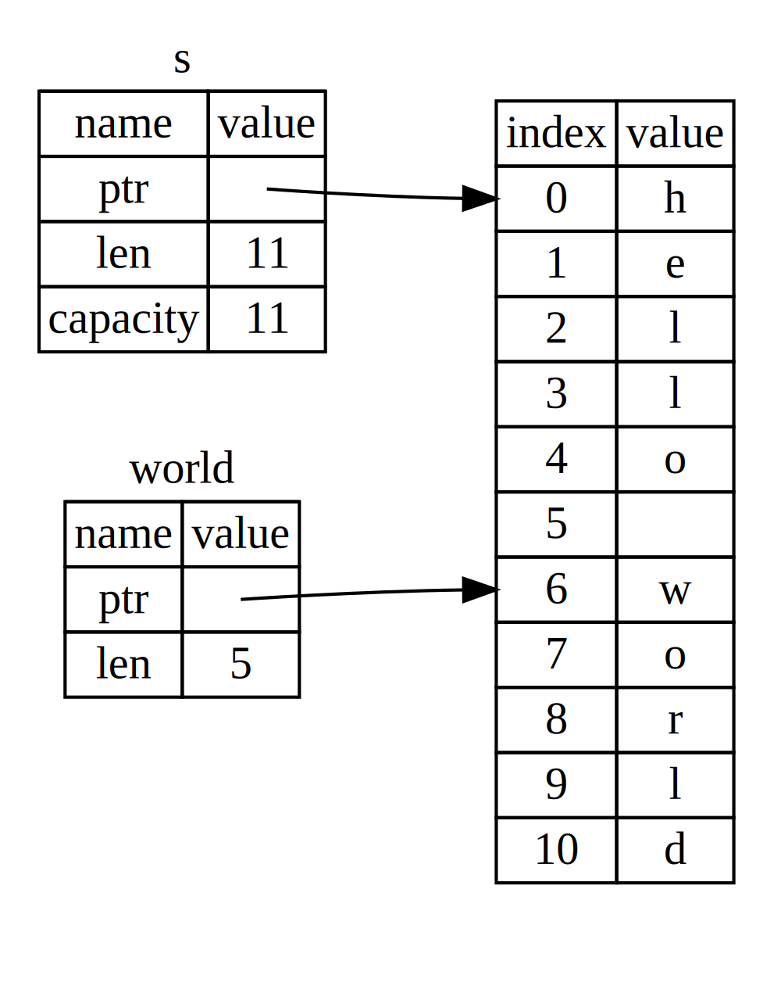

El Tipo Slice
Los Slices te permiten referenciar a una secuencia contigua de elementos en una colección en lugar de la colección completa. Un slice es una especie de referencia, por lo que no tiene ownership.
Aquí hay un pequeño problema de programación: escribe una función que tome un string de palabras separadas por espacios y retorne la primera palabra que encuentre en ese string. Si la función no encuentra ningún espacio en el string, todo el string debe ser una sola palabra, por lo que se debe retornar todo el string.
Trabajemos en cómo escribiríamos la firma de esta función sin usar slices, para entender el problema que los slices resolverán:
fn first_word(s: &String) -> ?La función first_word tiene un &String como parámetro. No queremos el
ownership, así que esto está bien. Pero ¿Que deberíamos retornar? Realmente no
tenemos una forma de hablar sobre "una porción de un string". Sin embargo,
podríamos retornar el índice del final de la palabra, indicado por un espacio.
Probemos eso, como se muestra en Listing 4-7.
Filename: src/main.rs
fn first_word(s: &String) -> usize { let bytes = s.as_bytes(); for (i, &item) in bytes.iter().enumerate() { if item == b' ' { return i; } } s.len() } fn main() {}
Listing 4-7: La función first_word retorna un
valor de índice en bytes dentro de un parámetro String
Dado que necesitamos recorrer el String elemento por elemento y comprobar si
un valor es un espacio, convertiremos nuestro String a un array de bytes
usando el método as_bytes.
fn first_word(s: &String) -> usize {
let bytes = s.as_bytes();
for (i, &item) in bytes.iter().enumerate() {
if item == b' ' {
return i;
}
}
s.len()
}
fn main() {}A continuación, creamos un iterator sobre el array de bytes utilizando el método
iter:
fn first_word(s: &String) -> usize {
let bytes = s.as_bytes();
for (i, &item) in bytes.iter().enumerate() {
if item == b' ' {
return i;
}
}
s.len()
}
fn main() {}Hablaremos más detalladamente sobre los iterators en Procesando una serie de
elementos con Iteradores. Por ahora, sabemos que iter es
un método que retorna cada elemento en una colección y que enumerate envuelve
el resultado de iter y retorna cada elemento como parte de una tupla. El
primer elemento de la tupla que retorna enumerate es el índice, y el segundo
elemento es una referencia al elemento.
Esto es un poco más conveniente que calcular el índice nosotros mismos.
Debido a que el método enumerate retorna una tupla, podemos usar patrones para
desestructurar esa tupla. Hablaremos más sobre los patrones en
Patrones que vinculan valores. En el ciclo for,
especificamos un patrón que tiene i para el índice de la tupla e &item para
el byte único en la tupla. Debido a que tomamos una referencia al elemento de
.iter().enumerate(), podemos usar& en el patrón.
Dentro del ciclo for, buscamos el byte que representa el espacio usando
la sintaxis literal del byte. Si encontramos un espacio, retornamos su posición.
De lo contrario, retornamos la longitud del string usando s.len().
fn first_word(s: &String) -> usize {
let bytes = s.as_bytes();
for (i, &item) in bytes.iter().enumerate() {
if item == b' ' {
return i;
}
}
s.len()
}
fn main() {}Ahora tenemos una forma de averiguar el índice del final de la primera palabra
en el string, pero tenemos un problema. Estamos retornando un usize por si
solo, pero es solo un número significativo en el contexto de él &String.
En otras palabras, debido a que es un valor separado del String, no hay
garantía de que siga siendo válido en el futuro. Considera el programa en
Listing 4-8 que usa la función first_word del Listing 4-7.
Filename: src/main.rs
fn first_word(s: &String) -> usize { let bytes = s.as_bytes(); for (i, &item) in bytes.iter().enumerate() { if item == b' ' { return i; } } s.len() } fn main() { let mut s = String::from("hello world"); let word = first_word(&s); // word obtendrá el valor 5 s.clear(); // esto "vacía" el String, dejando s igual a "" // word aún tiene el valor 5 aquí, pero ya no hay un string para que // usar el valor 5 tenga sentido, ¡word es totalmente invalida! }
Listing 4-8: Almacenando el resultado de llamar a
la función first_word y luego cambiar el contenido del String
Este programa compila sin errores y también lo hará si usáramos word después
de llamar a s.clear(). Debido a que word no está conectado al estado de s
en absoluto, word aún contiene el valor 5. Podríamos usar el valor 5 con
la variable s para intentar extraer la primera palabra, pero esto sería un
error porque el contenido de s ha cambiado desde que guardamos 5 en word.
¡Tener que preocuparse de que el índice de word no esté sincronizado con los
datos en s es tedioso y propenso a errores! El manejo de estos índices es aún
más frágil si escribimos una segunda función llamada second_word.
Su firma debería ser algo como esto:
fn second_word(s: &String) -> (usize, usize) {Ahora que estamos rastreando tanto el índice de inicio como el de fin, y tenemos aún más que se calcularon a partir de los datos en un estado particular, pero que no están vinculados a ese estado en absoluto. Tenemos tres variables no relacionados flotando por ahi que necesitan mantenerse sincronizadas.
Afortunadamente, Rust tiene una solución a este problema: los string slices.
String Slices
Un string slice es una referencia de parte de un String, y se ve algo como
esto:
fn main() { let s = String::from("hello world"); let hello = &s[0..5]; let world = &s[6..11]; }
En lugar de referenciar todo el String, hello es una referencia a una
porción del String, especificada en el segmento adicional [0..5]. Creamos
slices usando un rango dentro de corchetes, especificando
[starting_index..ending_index], donde starting_index es la primera posición
en el slice y ending_index es una posición más que la última posición en el
slice. Internamente, la estructura de datos del slice almacena la posición
inicial y la longitud del slice, lo que corresponde a ending_index menos
starting_index. Por lo tanto, en el caso de let world = &s[6..11];, world
sería un slice que contiene un puntero al byte en el índice 6 de s con un
valor de longitud de 5.
Figure 4-6 muestra esto en el diagrama.

Figure 4-6: String slice referencia una parte de un
String
Con la sintaxis de rango .. de Rust, si queremos comenzar en el índice 0,
podemos dejar el valor antes de los dos puntos. En otras palabras, estos son
iguales:
let s = String::from("hello");
let slice = &s[0..2];
let slice = &s[..2];
Del mismo modo, si el slice incluye el último byte del String, podemos
eliminar el número final. Esto significa que son iguales:
#![allow(unused)] fn main() { let s = String::from("hello"); let len = s.len(); let slice = &s[3..len]; let slice = &s[3..]; }
También podemos omitir ambos valores para tomar un slice de todo el string. Entonces estos son iguales:
#![allow(unused)] fn main() { let s = String::from("hello"); let len = s.len(); let slice = &s[0..len]; let slice = &s[..]; }
Nota: Los índices del rango del string slice deben ocurrir en límites válidos de caracteres UTF-8. Si intentamos crear un string slice en medio de un caracter multibyte, tu programa saldrá con un error. Para fines de introducción a los string slices, estamos asumiendo solo ASCII en esta sección; una discusión más completa sobre el manejo de UTF-8 se encuentra en la sección Almacenando texto codificado en UTF-8 con Strings del Capítulo 8.
Con toda esta información en mente, reescribamos first_word para retornar un
slice. El tipo que significa “string slice” se escribe como &str:
Filename: src/main.rs
fn first_word(s: &String) -> &str { let bytes = s.as_bytes(); for (i, &item) in bytes.iter().enumerate() { if item == b' ' { return &s[0..i]; } } &s[..] } fn main() {}
Obtenemos el índice para el final de la palabra de la misma manera que lo hicimos en el Listing 4-7, buscando la primera aparición de un espacio. Cuando encontramos un espacio, retornamos un string slice usando el inicio del string y el índice del espacio como índices de inicio y final.
Ahora cuando llamamos a first_word, obtenemos un único valor que está
vinculado a los datos subyacentes. El valor se compone de una referencia al
punto de inicio del slice y el número de elementos en el slice.
Retornando el slice también funcionaría para la función second_word:
fn second_word(s: &String) -> &str {Ahora tenemos una API sencilla que es mucho más difícil de estropear porque el
compilador se asegurará de que las referencias dentro del String sigan siendo
válidas. ¿Recuerdas el error en el programa en Listing 4-8, cuando obtuvimos
el índice para el final de la primera palabra, pero luego limpiamos el string
de modo que nuestro índice era inválido? Ese código era lógicamente incorrecto,
pero no mostraba errores inmediatos. Los problemas aparecerían más tarde si
seguimos intentando usar el índice de la primera palabra con un string vacío.
Los Slices hacen que este error sea imposible y nos permiten saber que tenemos
un problema en nuestro código mucho antes. El uso de la versión slice de
first_word arrojará un error en tiempo de compilación:
Filename: src/main.rs
fn first_word(s: &String) -> &str {
let bytes = s.as_bytes();
for (i, &item) in bytes.iter().enumerate() {
if item == b' ' {
return &s[0..i];
}
}
&s[..]
}
fn main() {
let mut s = String::from("hello world");
let word = first_word(&s);
s.clear(); // error!
println!("the first word is: {word}");
}Aquí está el error del compilador:
$ cargo run
Compiling ownership v0.1.0 (file:///projects/ownership)
error[E0502]: cannot borrow `s` as mutable because it is also borrowed as immutable
--> src/main.rs:18:5
|
16 | let word = first_word(&s);
| -- immutable borrow occurs here
17 |
18 | s.clear(); // error!
| ^^^^^^^^^ mutable borrow occurs here
19 |
20 | println!("the first word is: {word}");
| ------ immutable borrow later used here
For more information about this error, try `rustc --explain E0502`.
error: could not compile `ownership` (bin "ownership") due to 1 previous error
Recordemos que las reglas del borrowing si tenemos una referencia immutable a
algo, no podemos tomar también una referencia mutable. Debido a que clear
necesita truncar el String, necesita obtener una referencia mutable.
El println! después de la llamada a clear usa la referencia en word,
por lo que la referencia inmutable debe seguir activa en ese punto. Rust
impide que la referencia mutable en clear y la referencia inmutable en word
existan al mismo tiempo, y la compilación falla. No solo Rust ha hecho más fácil
nuestra API, sino que también ha eliminado una clase entera de errores en tiempo
de compilación.
String Literales como Slices
Recordemos que hablamos sobre que los string literales se almacenan dentro del binario. Ahora que sabemos sobre los slices, podemos entender correctamente los string literales:
#![allow(unused)] fn main() { let s = "Hello, world!"; }
El tipo de s aquí es &str: es un slice apuntando a ese punto específico
del binario. Esto también es por qué los literales de string son inmutables;
&str es una referencia inmutable.
String Slices as Parameters
Conociendo que puedes tomar slices de literales y valores String nos lleva
a una mejora más en first_word, y es su firma:
fn first_word(s: &String) -> &str {Un Rustacean más experimentado escribiría la firma mostrada en el Listing 4-9
en su lugar porque nos permite usar la misma función en ambos valores &String
y &str.
fn first_word(s: &str) -> &str {
let bytes = s.as_bytes();
for (i, &item) in bytes.iter().enumerate() {
if item == b' ' {
return &s[0..i];
}
}
&s[..]
}
fn main() {
let my_string = String::from("hello world");
// `first_word` funciona con slices de un string, sean parciales o completos.
let word = first_word(&my_string[0..6]);
let word = first_word(&my_string[..]);
// `first_word` también funciona con referencias de un string, que son equivalentes
// a un slice completo de un String
let word = first_word(&my_string);
let my_string_literal = "hello world";
// `first_word` funciona con slices de string literales, sean parciales o completos
let word = first_word(&my_string_literal[0..6]);
let word = first_word(&my_string_literal[..]);
// Por que los strings literales son slices de strings,esto también funciona,
// sin necesidad de usar la sintaxis de slices.
let word = first_word(my_string_literal);
}Listing 4-9:
Mejorando la función first_word usando un string slice como parámetro
para el tipo del parámetro des
Si tenemos un string slice, podemos pasar directamente ese valor. Si tenemos
un String, podemos pasar un slice del String o una referencia al String.
Esta flexibilidad aprovecha las deref coercions, una característica que
veremos en la sección
"Tratando los Smart Pointers como Referencias Regulares con el Trait Deref"
del Capítulo 15.
Definir una función para tomar un string slice en lugar de una referencia a un
String hace que nuestra API sea más general y útil sin perder ninguna
funcionalidad:
Filename: src/main.rs
fn first_word(s: &str) -> &str { let bytes = s.as_bytes(); for (i, &item) in bytes.iter().enumerate() { if item == b' ' { return &s[0..i]; } } &s[..] } fn main() { let my_string = String::from("hello world"); // `first_word` funciona con slices de un string, sean parciales o completos. let word = first_word(&my_string[0..6]); let word = first_word(&my_string[..]); // `first_word` también funciona con referencias de un string, que son equivalentes // a un slice completo de un String let word = first_word(&my_string); let my_string_literal = "hello world"; // `first_word` funciona con slices de string literales, sean parciales o completos let word = first_word(&my_string_literal[0..6]); let word = first_word(&my_string_literal[..]); // Por que los strings literales son slices de strings,esto también funciona, // sin necesidad de usar la sintaxis de slices. let word = first_word(my_string_literal); }
Otros Slices
Los string slices, como puedes imaginar, son específicos para strings. Pero hay un tipo de slice más general. Considera este array:
#![allow(unused)] fn main() { let a = [1, 2, 3, 4, 5]; }
Así como podemos querer referirnos a parte de un string, también podemos querer referirnos a parte de un array. Lo haríamos de esta manera:
#![allow(unused)] fn main() { let a = [1, 2, 3, 4, 5]; let slice = &a[1..3]; assert_eq!(slice, &[2, 3]); }
Este slice tiene el tipo &[i32]. Funciona de la misma manera que los slices
de string, almacenando una referencia al primer elemento y una longitud. Usarás
este tipo de slice para todo tipo de colecciones. Hablaremos de estas
colecciones en detalle cuando veamos vectores en el Capítulo 8.
Resumen
Los conceptos de ownership, borrowing, y slices aseguran la seguridad de la memoria en los programas Rust en tiempo de compilación. El lenguaje Rust te da control sobre el uso de la memoria de la misma manera que otros lenguajes de programación de sistemas, pero el hecho de que el propietario de los datos limpie automáticamente esos datos cuando salen del scope significa que no tienes que escribir y depurar código extra para obtener este control.
El ownership afecta a cómo funcionan otras partes de Rust, así que hablaremos
de estos conceptos más adelante en el libro. Vamos a pasar al Capítulo 5 y
ver cómo agrupar piezas de datos en un struct.